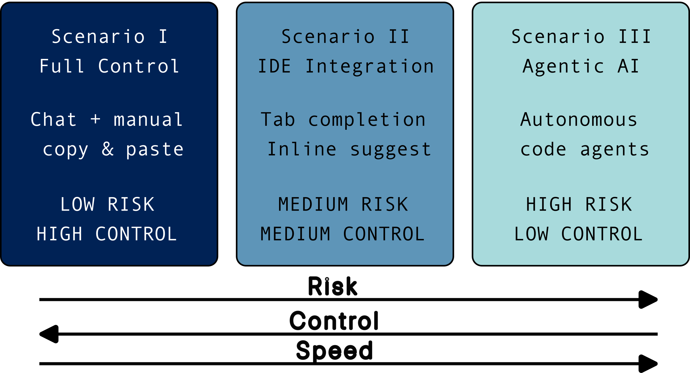

Conclusions and Next Steps
Questions
How do I decide which AI coding approach is right for my work?
What should I try first to get started safely?
Where can I learn more and stay updated?
Objectives
Provide a decision framework for choosing AI coding approaches
Suggest concrete next steps for exploration
Point to resources for continued learning
What we’ve learned
This course has explored the spectrum of AI-assisted coding, from full manual control to autonomous agents.
{kind=link}

Key takeaways
LLMs are pattern matchers, not reasoners
They excel at common patterns but can confidently produce wrong code
Always verify, never blindly trust
Control and speed trade off
More automation means faster development but less oversight
Choose the level appropriate for your task’s risk profile
Security is non-negotiable
Verify packages before installing
Review code for vulnerabilities
Never share sensitive data with AI services
Transparency matters
Understand what data leaves your machine
Know your tool’s privacy policies
Document AI-assisted portions of your work
Decision framework
Use this framework to decide which approach fits your situation:
Step 1: Assess the sensitivity
Factor |
Low sensitivity |
High sensitivity |
|---|---|---|
Data |
Public/synthetic |
Private/confidential |
Code |
Open source style |
Proprietary/patented |
System |
Isolated dev machine |
Production/research infrastructure |
High sensitivity → Use Scenario I (chat) or local models (see Appendix II: Running Local LLMs for Coding)
Step 2: Assess the risk tolerance
Factor |
Low stakes |
High stakes |
|---|---|---|
Reversibility |
Easy to undo |
Hard to fix |
Impact |
Personal project |
Shared/published work |
Verification |
Easy to test |
Complex to validate |
High stakes → More control, more review
Step 3: Match approach to task
Task type |
Recommended approach |
|---|---|
Learning a new concept |
Scenario I (chat) |
Designing architecture |
Scenario I (chat) |
Writing routine code |
Scenario II (IDE) |
Refactoring |
Scenario II or III |
Boilerplate generation |
Scenario III (agentic) |
Security-critical code |
Scenario I with extra review |
Production deployment |
Manual, with AI consultation only |
Warning
Expertise amplification: Remember that AI tools amplify existing expertise. An experienced developer with domain knowledge will get dramatically better results than a beginner. This is because they:
Know what to ask for (have a mental model of the solution)
Can evaluate whether output is correct
Know which follow-up questions to ask
Recognize when the AI is confidently wrong
Don’t expect AI to compensate for fundamentals you haven’t learned. It’s a force multiplier, not a replacement for understanding.
Recommended first steps
If you’re new to AI-assisted coding, start conservatively:
Week 1: Chat-based exploration
Try a chatbot for a real task
Pick something non-critical from your current work
Ask it to help design a function or explain existing code
Practice the modular prompting approach
Verify everything
Check any suggested packages exist
Test generated code thoroughly
Ask the AI about edge cases
Week 2: IDE integration (carefully)
Set up with restrictions
Install GitHub Copilot or Codeium
Configure
.copilotignorefor sensitive filesDisable for markdown and data files
Practice critical review
Use the 3-second rule before accepting
Watch for wrong variable names and assumptions
Compare suggestions to your own solutions
Week 3: Evaluate advanced tools
Research before installing
Read privacy policies
Understand permission models
Check institutional policies
Try in a sandbox
Use Docker or a test environment
Start with read-only modes
Never give access to real research data
Tools to try
Beyond these recommendations
The tools listed below are starting points aligned with our three scenarios. The real landscape is much broader—see Appendix I: The Full Spectrum of AI Coding Tools for a comprehensive taxonomy of AI coding tools, including local/self-hosted options, PR-native agents, and specialized review tools.
Chatbots (Scenario I)
Tool |
Access |
Notes |
|---|---|---|
Free, no account needed |
Privacy-focused, anonymous |
|
Free tier available |
Most widely used |
|
Free tier available |
Large context window |
|
Free |
Google integration |
IDE extensions (Scenario II)
Tool |
Access |
Notes |
|---|---|---|
Free for students |
Most mature |
|
Free core |
Good free option |
Agentic tools (Scenario III)
Tool |
Access |
Notes |
|---|---|---|
Requires Claude sub |
Terminal-based |
|
Requires OpenAI subscription |
Terminal based |
|
Open source |
Multiple models |
Staying informed
The AI coding landscape changes rapidly. Stay updated:
News and research
Hacker News - Tech community discussions
arXiv cs.SE - Software engineering research
The Pragmatic Engineer - Industry perspective
Practitioner blogs
Simon Willison’s Weblog - Practical AI-assisted coding insights
Addy Osmani’s Blog - Software engineering and AI workflows
Security updates
OpenSSF - Open Source Security Foundation
Community discussions
Your local research computing community
CodeRefinery workshops and Zulip chat
The Carpentries community
Institutional considerations
Before adopting AI tools for research, check:
Policy compliance
Does your institution have AI usage policies?
Are there data handling requirements for your field?
What about publication requirements (disclosing AI use)?
Research integrity
How will you document AI-assisted portions?
What verification process will you use?
How will you ensure reproducibility?
Collaboration
Are your collaborators comfortable with AI tools?
How will you handle shared codebases?
What about code review processes?
Emerging standards
Many journals and funding bodies are developing policies on AI use in research. Stay informed about requirements in your field. When in doubt, disclose AI assistance and document your verification process.
Final exercise
Exercise Final: Create your personal AI coding policy
Create a brief document (1 page) that outlines your personal policy for using AI coding assistants. Include:
Which tools you’ll use and for what purposes
Security measures you’ll implement
Verification steps you’ll always perform
What you won’t do (boundaries)
How you’ll document AI assistance in your work
Share this with your research group or collaborators for discussion.
Solution
Example policy outline:
My AI Coding Policy
Tools I’ll use:
ChatGPT/Claude for design discussions and learning
GitHub Copilot for routine coding (with restrictions)
No agentic tools on production systems
Security measures:
All secrets in environment variables, never in code
.copilotignore for data and credential files
Verify all suggested packages on PyPI
Run bandit on AI-generated code
Verification steps:
Test all AI code with edge cases
Review for OWASP Top 10 vulnerabilities
Understand all code before committing
Boundaries:
No real participant data shared with AI
No AI for security-critical authentication code
No AI commits without human review
Documentation:
Note AI-assisted sections in code comments
Include “AI-assisted” in commit messages where applicable
Disclose in publications per journal requirements
Summary
AI coding assistants are powerful tools that require thoughtful adoption:
Start with high-control approaches and gradually explore automation
Security is not optional, build verification into your workflow
Match tool autonomy to task risk
Stay informed as the landscape evolves
Document and be transparent about AI assistance
The goal is not to avoid AI tools, but to use them responsibly in a way that enhances your productivity while maintaining the integrity and security of your research.
Keypoints
Match AI tool autonomy to task risk and sensitivity
Start with chat-based approaches before exploring more automation
Security measures and verification steps are non-negotiable
Document AI assistance for transparency and reproducibility
Stay informed as the landscape evolves rapidly